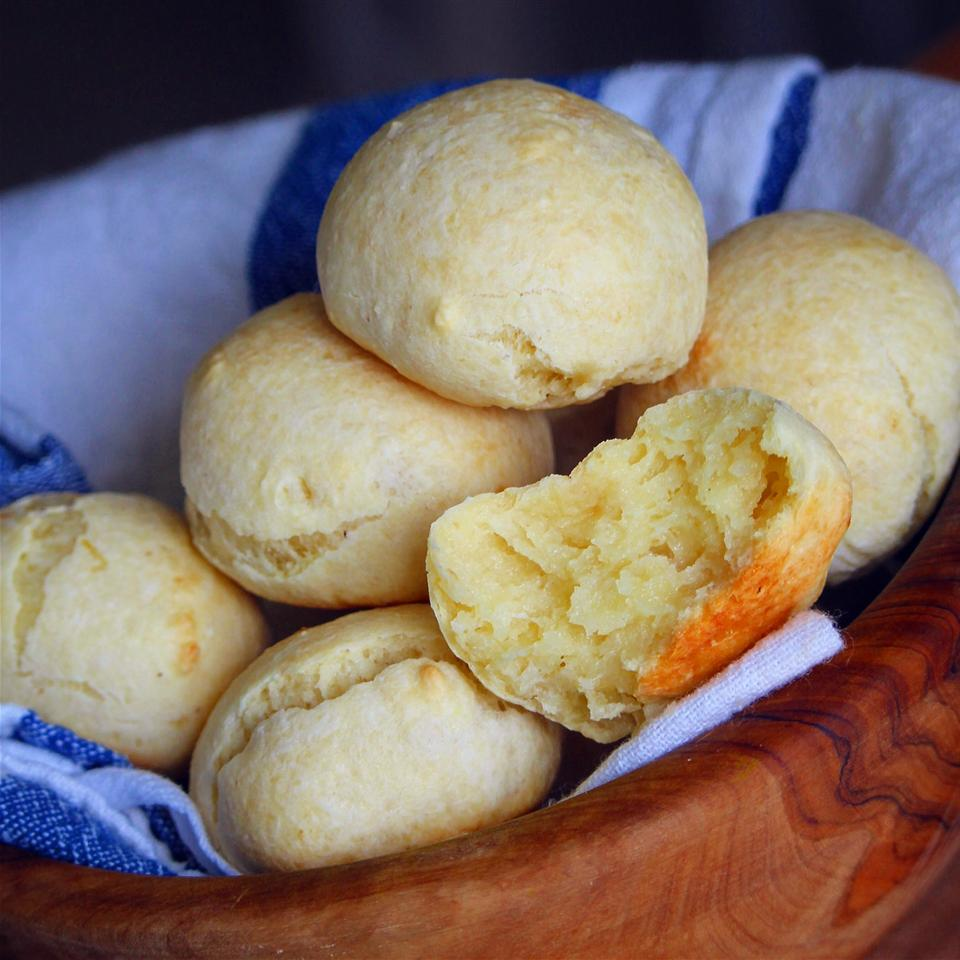

Brazilian Cheese Bread

Description
Brazilian cheese bread is a small, baked cheese roll or cheese bun, a popular snack and breakfast food in Brazil.
Ingredients
- 1 ¼ cups milk
- 1 ½ teaspoons salt
- 4 ⅓ cups tapioca flour
- 1 tablespoon tapioca flour
- 2 eggs
- 1 ⅓ cups grated parmesan cheese
Steps
- Preheat oven to 350 degrees F (175 degrees C). Grease and flour a baking sheet.
- Combine milk, vegetable oil, and salt together in a saucepan; bring to a boil. Add 4 1/3 cups plus 1 tablespoon tapioca flour; stir constantly until dough easily pulls away form the sides of the pan. Remove from heat; cool 10 to 15 minutes. Stir in eggs, one at a time. Mix in Parmesan cheese.
- Shape the dough into small balls with greased hands; place onto baking sheet a few inches apart.
- Bake in the preheated oven until puffed and golden, about 25 minutes.
Go back to the Recipe List